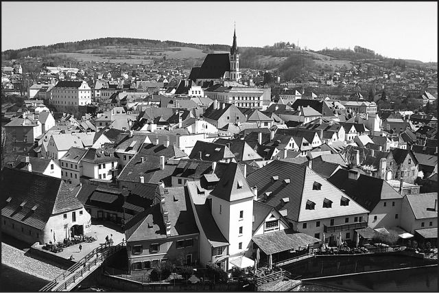
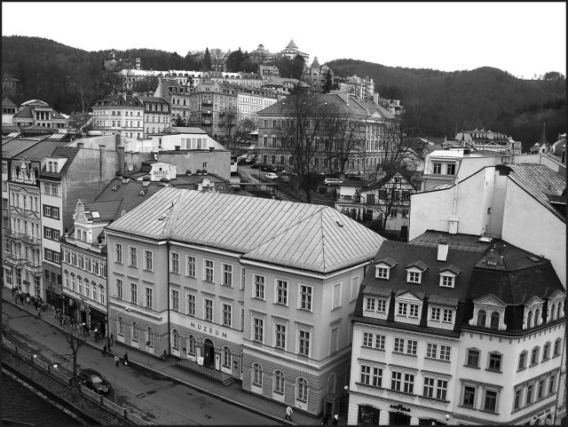
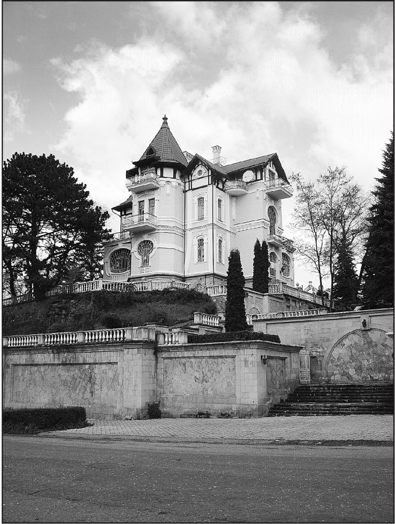

Страницы авторов "Тёмного леса"
Пишите нам! temnyjles@narod.ru
Все большую актуальность для курортного региона КМВ, и города Кисловодска в том числе, приобретает проблема сохранения историко-архитектурного наследия. К сожалению, в нашей стране мало где еще пришли к осознанию того, что целостный и гармоничный архитектурный ландшафт города может быть таким же фактором привлечения туристов как и выдающиеся объекты природы, лечебно-рекреационные ресурсы (минеральные воды, грязи, климат и пр.). В данном отношении Европа опередила нас более чем на столетие. Оказывается еще в 1907 году в Королевстве Пруссия (в составе Германской империи) был принят закон, который давал право муниципальным органам запрещать собственникам возводить такие здания, которые нарушают "своеобразие картины местности", т.е. целостность архитектурного облика того или иного городского района. Затем и в других странах Европы стали обращать внимание на культурную и историческую ценность застройки городов. Особенно актуально это стало после Второй мировой войны, когда половина континента лежала в руинах, и выделились города, которые пострадали незначительно. Они то и стали затем крупнейшими туристическими центрами, которые теперь привлекают по нескольку миллионов туристов в год. Города, лучше всего сохранившие свой исторический облик, включены в список объектов всемирного наследия ЮНЕСКО.
Первое место по количеству объектов ЮНЕСКО в Европе занимает Чехия. Прагу недаром называют иногда самой красивой столицей Европы. Этот древний город сохранил не только целые районы, застроенные особняками в стиле "модерн", но и кварталы в стиле барокко, выдающиеся памятники ренессанса, несколько десятков объектов романской и готической архитектуры (в том числе шедевры зодчества - собор Святого Вита и костел Девы Марии Перед Тыном). В 1990-х годах в Праге "увлеклись" строительством небоскребов (правда, поодаль от исторического центра). Однако комиссия из ЮНЕСКО предупредила муниципалитет: еще один небоскреб - и Прагу исключат из списка. Подействовало. Так что теперь стобашенная Прага восхищает туристов со всех концов мира. А восхищали бы туристов так собор Святого Вита и знаменитый Карлов Мост будь они в окружении офисных и торговых зданий из стекла и бетона, да еще с тонированными стеклами? Думается, что нет.
Однако оставим Прагу. Это все-таки столичный город. В Чехии есть два крошечных городка, которые также внесены в список ЮНЕСКО как города-музеи под открытым небом. Это Кутна-Гора и Чески-Крумлов. Эти два городка с их кривыми узкими улочками, "пряничными" домиками с черепичными крышами живут в настоящее время только за счет приема многочисленных туристов, число которых многократно превышает численность местного населения. Архитектура здесь "кормит" население лучше всякой нефти.
Знаменитый курорт Карловы Вары ежегодно принимает всего 70 тысяч курортных больных и два миллиона туристов. Что привлекает такое огромное количество людей? В основном историкоархитектурное наследие.
В последнее время интенсивно набирает вес в качестве международного центра туризма столица шведского королевства Стокгольм. Этому городу с живыми монархическими традициями посчастливилось избежать разрушений в XX веке (Швеция уже почти 200 лет ни с кем не воюет). В 1950-х годах муниципалитет Стокгольма принял недальновидное решение о сносе одного из исторических районов города. В районе площади Сергельса (Sergelstorget) выросли серые "безликие" многоэтажки в модном тогда функциональном стиле. Осознание ужаса содеянного пришло после того как туристы начали спрашивать: "Вас что, бомбили?". Конечно, утраченное уже было не вернуть, но к счастью для жителей Стокгольма в остальных районах историческая застройка оставалась практически нетронутой. В наше время на островах Стадсхольмен и Хельгеандсхольмен (историческое ядро города) практически нет зданий, выстроенных позднее XVIII столетия. Узенькие средневековые улочки оставляют самые неизгладимые впечатления у многочисленных туристов. Городские власти Стокгольма вовремя остановили процесс "модернизации исторического центра". Новые же архитектурные замыслы успешно воплощаются в современных районах шведской столицы, которые построены по принципу автономности и имеют хорошо развитую современную инфраструктуру. И важно, что эти районы не претендуют на то, чтобы "залезть" на землю исторического центра.
В России понемногу начинают воплощаться отдельные мероприятия связанные с сохранением историко-архитектурного наследия. Так, в знаменитом Суздале еще в советское время осознали недопустимость возведения многоэтажек в пределах видимости из исторического центра. Здания высотой более трех этажей строить запрещено. Более высокие жилые дома находятся в отдельном микрорайоне и спрятаны за лесополосой из довольно-таки рослых деревьев. Однако оставляет желать лучшего внешний вид многих монастырей и храмов города, а также архитектурный облик некоторых новых построек. В Суздале в последнее время появилось много вычурных "теремков", которые не столько повторяют, сколько пародируют архитектуру подлинных мещанских и купеческих домов города. Возведение их нарушает общую историческую атмосферу.
В Кисловодске пока еще есть кварталы с исторической застройкой. Это бывшие слободские улицы (Гагарина, Лермонтова. Березовская, Ксении Ге, Чернышевского и др.). Одноэтажные и двухэтажные слободские дома с крытыми резными балкончиками содержат в себе не меньшую культурную и историческую ценность, чем Главные Нарзанные Ванны или Нарзанная галерея, поскольку являются живым (и более красноречивым) свидетельством материальной культуры населения Кисловодска в позапрошлом столетии. Именно поэтому для нас важно сохранить их для грядущих поколений. Совершенно недопустимо возведение многоквартирных многоэтажек в районах с такой застройкой.
К сожалению, уже достаточно давно утрачена архитектурная целостность такого уникального района как "Реброва Балка". Это бывший дачный район, застроенный особняками в стиле "модерна", эклектики и неоклассицизма. Подобные дачные поселки возникали далеко не во всех российских городах, а лишь в курортных (за редким исключением). Поэтому в настоящее время основная задача - сохранить в целости то, что уцелело после бездумного возведения бетонных "дворцов здоровья" на месте старинных "романтических замков". Причем, необходимо обращать внимание не только на "хрестоматийные" памятники кисловодского зодчества (такие как бывший особняк Твалчрелидзе, ошибочно называемый "дачей Кшесинской"), но и на такие как бывшая дача М.З. Гориной ("терем" из кирпича и дерева на переулке Бородинском), находящаяся теперь в плачевном состоянии. Этот особняк представляет особенное архитектурное направление, в целом нетипичное для кисловодской застройки того времени, в чем и заключается его ценность. Также недопустимо нарушать архитектурную целостность того или иного особняка, что мы наблюдали в отношении "карточного домика" (известен как "дача Путята") по улице Желябова, к которому пытались пристроить дополнительный этаж, заодно уничтожив подлинную черепичную кровлю. Отдельно следует сказать о том, что такие здания требуют квалифицированной реставрации. Непрофессионально проведенная реставрация может быть равнозначна разрушению памятника. Старинный Свято-Никольский храм в Ессентуках был недавно отреставрирован так, что производит впечатление только что построенного. Убедиться в том, что он действительно старинный можно лишь после осмотра интерьера. Подобная же реставрация была проведена в уникальных храмах X века в Нижнем Архызе (кровля из металлочерепицы, плитка, изготовленная в местном цехе и т.п.). Реконструкцию исторических зданий требуется проводить еще осторожнее и не допускать такого изменения облика здания, какое было проведено над бывшей гостиницей "Нарзан" Смирнова (ныне "Гранд-Отель" на Курортном Бульваре). Здание, строившееся в едином ансамбле с соседними теперь "выпадает из общего строя", даже если кто-то будет говорить обратное.
Не нужно слепо копировать все, что претворяет в жизнь Европа. Но использовать тот опыт, который приводит к однозначно положительному результату и не требует даже каких-то особых поправок к российским условиям все же стоит. Давайте сохранять бережно наше архитектурное наследие, и оно нас обязательно еще будет "кормить", поскольку не шашлык, вино и вязаные кофточки привлекают к нам отдыхающих, а нарзан, парк, горный климат, красивые окрестности, а еще богатая история и уникальная архитектура. Остается только с умом использовать то, что дано нам природой и прежними поколениями кисловодчан.
  
Чехия. Чески-Крумлов. Фото автора. Чехия. Карловы Вары. Фото автора. Кисловодск. Бывший особняк Твалчрелидзе. Фото автора.
Вячеслав Яновский. Неакадемические сочинения